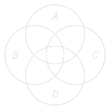
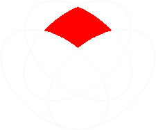
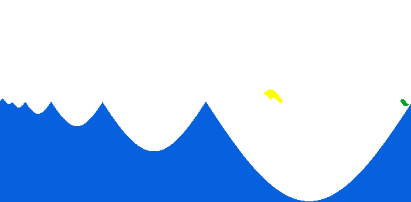
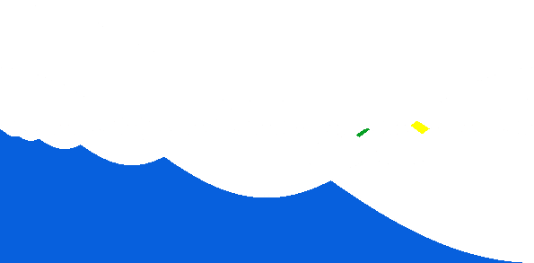

Venni diagramm, nimetatud briti loogiku John Venni järgi, on vahend hulgateoreetiliste tehete ning lausearvutuse vahendite visualiseerimiseks.
Diagrammi eesmärgiks on kujutada kõikvõimalikke loogilisi suhteid lõpliku arvu hulkade vahel. Selleks mõeldakse hulkadest, kui mingitest suletud pindadest, ning hulkade elementidest, kui punktidest neil pindadel. Seades pinnad selliselt, et need omavahel kõikvõimalikel viisidel kattuvad, saamegi Venni diagrammi.
Klassikaline Venni diagrammi näide koosneb üksteisega kattuvatest ringidest, nagu on näha joonisel 1. Antud juhul on kujutatud kolme hulka A, B, C ning nendevahelisi loogilisi seoseid, millest mõned on värviga välja toodud. Kollasega värvitud ala kujutab kõiki neid elemente, mis kuuluvad korraga kõikidesse neisse hulkadesse. Sinine ala tähistab neid elemente, mis kuuluvad ainult hulka C, roheline elemente, mis kuuluvad hulka A, aga ei kuulu hulka B ja punane elemente, mis kuuluvad hulkadesse B ja C, aga ei kuulu hulka A.
Venni diagrammid leiavad laialdast kasutust hulgateooria õpetamisel ning andmete visualiseerimisel paljudes valdkondades.
Vaatleme olukorda, kus meil on vaja kujutada eelmises näites toodud kolme hulga asemel nelja hulka. Intuitiivselt võiks joonistada sellise diagrammi, nagu on näha joonisel 2. Enamikul juhtudel paistab selline diagram toimivat, kuid kui sooviksime kujutada seda ala, mis on eelmisel joonisel punasega tähistatud (ehk elemente, mis kuuluvad hulkadesse B ja C ning ei kuhugi mujale), tekib probleem, sest sellist ala diagrammil ei leidu.
Seega vaadeldav diagramm ei ole Venni diagramm, sest see ei kujuta kõikvõimalikke loogilisi suhteid. Üheks lahenduseks tekkinud olukorrale on kasutada ringide asemel näiteks ellipseid ning paigutada need nii, nagu on näha joonisel 3. Ringide puhul puuduv ala on tähistatud punasega.


Kui on soov kujutada korraga veel suuremat arvu hulki, siis on otstarbekas läheneda ülesandele süsteemsemalt. Ühe võimaliku lahenduse pakkus välja Anthony William Fairbank Edwards, kelle ideeks oli joonistada Venni diagramme kasutades kera pinnalaotuse segmentide abi.
Näiteks kuue hulga puhul näeb Edwardsi-Venni diagramm välja selline, nagu on näha joonisel 4. Diagrammi alumine pool kujutab esimest hulka, parem pool teist hulka ning edasised hulgad saab kujutada joonistades peale kõveraid kera pinna segmente. Nii tähistab kolmandat hulka diagrammi keskel olev ring, neljas hulk meenutab tennisepallil olevat kõverjoont ning edaspidised hulgad näevad välja nagu järjest kitsamaks minevad hammasrattad diagrammi keskel. Taoline lähenemine kujutab ära kõikvõimalikud hulkadevahelised suhted.
Näiteks on joonisel 4 sinisena kujutatud kõigi kuue hulga ühisosa, rohelisena kuuenda hulga elemendid, mis kuhugi mujale ei kuulu, ja kollasena elemendid, mis kuuluvad ainult teise ja neljanda hulga ühisosasse ja ei kuhugi mujale. Joontega piiramata ala, mis jääb vasakusse ülemisse nurka tähistab elemente, mis ei kuulu ühtegi hulka.

Veel üks võimalus kujutada korraga suurt arvu hulki on kasutada siinuse või koosinuse graafikut. Sellisel juhul näevad diagrammid kuue hulga puhul välja, nagu on kujutatud vastavalt joonistel 5 ja 6.
Põhimõte on üsnagi lihtne: igale hulgale vastab oma graafik, nii et esimesel hulgal on joone amplituud ja periood kõige suurem, ning mida hulk edasi, seda väiksemaks graafiku amplituud ja periood muutuvad. Need elemendid, mis hulka kuuluvad, asuvad selle hulga graafiku joonest allpool ja need, mis hulka ei kuulu, ülalpool.
Toome Edwardsi-Venni diagrammi puhul esitatud näited ka sinusoidsete diagrammide puhul välja: Sinisega on värvitud kõigi kuue hulga ühisosa, kollasega elemendid, mis kuuluvad ainult teise ja neljanda hulga ühisosasse ning ei kuhugi mujale ja roheline märgib elemente, mis kuuluvad ainult kuuendasse hulka.

